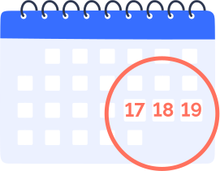

Все об онлайн- голосовании в Москве
Когда голосовать
С 17 по 19 сентября пройдут всероссийские выборы в Госдуму. Кроме того, жители нескольких районов столицы будут голосовать за депутатов Мосгордумы и муниципальных советов. На всех выборах москвичи смогут проголосовать онлайн. Эта опция доступна жителям столицы старше 18 лет с полной учетной записью на mos.ru. Регистрация для участия в электронном голосовании уже началась и будет продолжаться до 23:59 13 сентября, само голосование пройдет с 08:00 17 сентября до 20:00 19 сентября.
Рассказываем, с какими технологиями встретятся избиратели на этих выборах.
Как устроена система электронного голосования
Давайте рассмотрим по шагам, как устроена в Москве процедура электронного голосования, что происходит с нашими личными данными и результатом голосования.
Как проголосовать онлайн
Регистрация
Чтобы отправить заявление на участие в онлайн-голосовании, пользователь должен подтвердить личность при помощи кода из СМС. Он придет на номер телефона, указанный в личном кабинете на mos.ru. Кроме того, о начале записи на электронное голосование, его старте и окончании можно будет узнать из уведомлений в личном кабинете на mos.ru и писем, которые придут на указанную в нем электронную почту. Такая процедура идентификации хорошо знакома каждому, кто хоть раз пользовался онлайн-приложениями банков или регистрировался в интернет-магазинах.
Как приступить к голосованию
В дни голосования: 17-19 сентября 2021 года избиратель сможет попасть на страницу электронного голосования любым удобным для него способом: выбрав услугу в каталоге на mos.ru, кликнув на специальные баннеры, размещенные на mos.ru (в том числе в личном кабинете), перейдя по ссылке из СМС, электронной почты или уведомлений в личном кабинете.
Голосование будет доступно на mos.ru с 8:00 17 сентября до 20:00 19 сентября.
Как открыть бюллетень
Получить электронный бланк для голосования можно по коду из СМС. Как только вы получаете бюллетень, ваше имя перестает существовать для системы.
Это происходит благодаря специальной программе-анонимайзеру. Теперь ни администраторам системы, ни наблюдателям не видно, кто и как голосует. В бюллетене нет ни персональных данных, ни порядкового номера, и в этом смысле его можно сравнить с обезличенным бланком ЕГЭ.
Электронный бюллетень нигде не хранится и существует только на экране избирателя.
Москва голосует онлайн
Электронное голосование проводится уже в четвертый раз. Впервые оно было организовано в 2019 году на выборах в Московскую городскую Думу. Безопасность и прозрачность также основывалась на технологии блокчейн, а тайна и анонимность голосования обеспечивались при помощи специальных алгоритмов и шифрования.